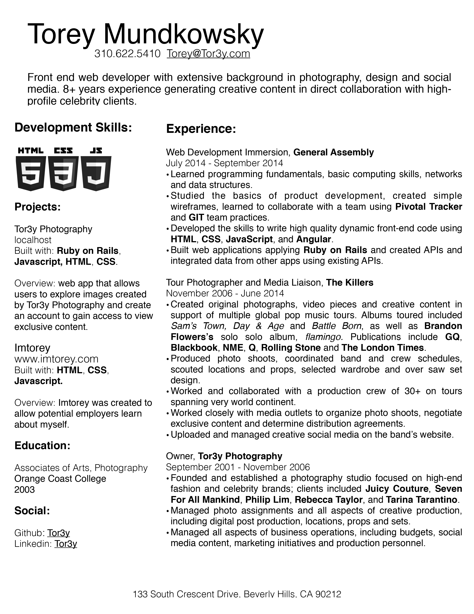

DOWNLOAD RESUME

Torey Mundkowsky is a web developer with a love of design and an extensive background in professional photography. As the tour photographer for The Killers, Torey traveled to every corner of the globe, capturing the band on their tours for Sam's Town, Day & Age and Battle Born. His images have been published in GQ, Blackbook, NME, Q, Rolling Stone and The London Times. Previously, Torey developed creative content for brands such as Juicy Couture, Philip Lim and Seven For All Mankind. He lives and works in Los Angeles.